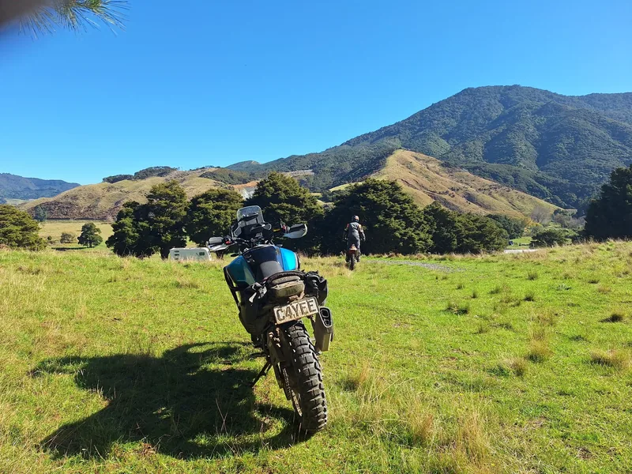

Next up · Aug 2026
Grade 3
The Five Year Plan
Ride the length of New Zealand over five years, starting at Cape Reinga. Six days of Northland's off-road tracks, private land and scenic trails — with accommodation, dinners and a luggage van doing the heavy lifting.
$2,990per year
Join the ride list